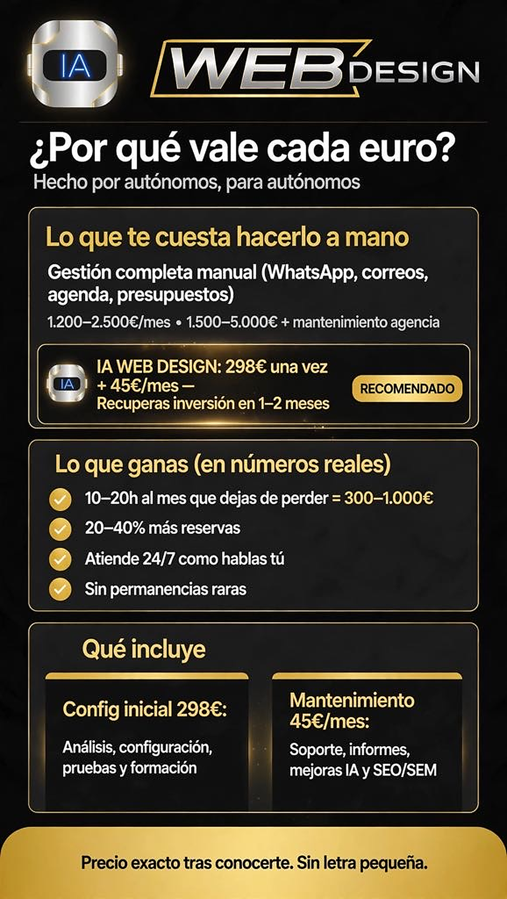
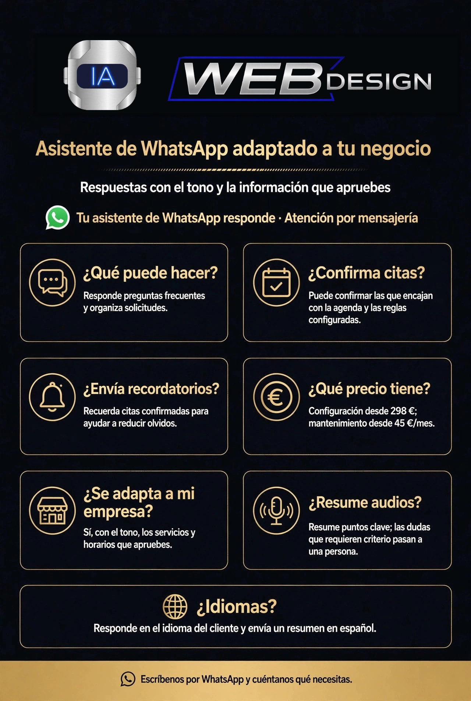

WhatsApp y correo
Responde a tus clientes en los canales que ya conocen y envía correos con el estilo de tu negocio.

Un asistente de IA especializado e integrado en tu empresa: atiende WhatsApp y correo, organiza citas, presupuestos y seguimientos, y te ayuda a detectar nuevas oportunidades.
No es solo un contestador virtual. Es poner tu negocio al día.¿Prefieres escribirnos por correo? chat@ia-webdesing.es
Te asesoramos con modelos de IA actualizados para analizar tu presencia en redes y la de tu competencia, y convertir esos hallazgos en recomendaciones prácticas.
Un asistente de IA adaptado a tus servicios y a tu manera de trabajar: atiende por WhatsApp y correo, responde y envía mensajes, prepara presupuestos y ordena solicitudes.
Responde a tus clientes en los canales que ya conocen y envía correos con el estilo de tu negocio.
Explica tus servicios y prepara presupuestos profesionales con una comunicación clara.
Ordena consultas, citas y seguimientos para que tus clientes tengan claro el siguiente paso.
Libera tiempo de tareas repetidas para que puedas dedicarlo a tu negocio y a tus clientes.
Recibe resúmenes diarios de mensajes, citas, presupuestos, tareas pendientes y solicitudes de factura, con una visión clara de lo que requiere atención.
Entiende los mensajes de voz de tus clientes y responde a su consulta por WhatsApp. También puede atender en su idioma y resumir notas de voz largas.
Añade nuevas indicaciones, servicios, productos y cambios de inventario para mantener su información al día. Con las conversaciones y los correos que autorices, detectamos dudas frecuentes y ajustamos la atención a tu forma de trabajar.


Presenta tus servicios, responde consultas y mantén una comunicación más clara y cercana con tus clientes.

Tus clientes pueden escribirte desde una aplicación que ya conocen, sin descargar otra para hacer una consulta.
Presenta nombre, horarios, ubicación, servicios y precios con una imagen profesional.
Responde con el tono de tu negocio y ofrece información útil a tus clientes.
Mantén a la vista nuevos chats, solicitudes y conversaciones que necesitan seguimiento.

Tu asistente especializado avisa por WhatsApp o correo a clientes que ya utilizan ese servicio o han preguntado por él, para que sepan que pueden reservar.
Recuerdan la cita en el momento oportuno y ayudan a que tus clientes la tengan presente.
Gestiona cambios y cancelaciones para que puedas reorganizar tu agenda con más facilidad.
Cuando se libera una cita, avisa a clientes interesados y te ayuda a aprovechar ese hueco.
Planifica y programa mensajes semanales o mensuales de novedades, promociones y disponibilidad para tus clientes por WhatsApp y correo, y prepara publicaciones en tus grupos de WhatsApp.
Más orden para tus citas y nuevas oportunidades para volver a conectar con tus clientes.

Nuestra IA analiza reseñas, comentarios y conversaciones para ayudarte a entender a tus clientes y volver a conectar con quienes hace tiempo que no regresan. También estudia tu web, tus redes sociales y la presencia digital de tu competencia para sugerir mejoras y nuevas campañas.
La IA analiza reseñas, comentarios y conversaciones para detectar qué valoran tus clientes y qué dudas se repiten. Con esa información, te ayuda a preparar seguimientos y campañas personalizadas para reabrir la conversación e invitarlos a volver.
Revisa tu web, tus redes sociales y la presencia digital de otros negocios de tu sector para encontrar oportunidades y proponerte nuevas ideas de campaña.
SEO: mejoras en tu web para ayudar a que aparezca en los resultados orgánicos de búsqueda de Google y otros buscadores. SEM: campañas de anuncios de pago que muestran tu negocio a personas que buscan servicios como los tuyos.

De las opiniones de tus clientes al contacto por WhatsApp: ideas claras para seguir mejorando.
Además del asesoramiento SEO/SEM, podemos crear la página web de tu negocio y gestionar tus redes sociales. Adaptamos el alcance y el presupuesto a lo que necesites. La gestión de redes no incluye creación de contenido.
Respuestas sobre servicios, tarifas y citas para que tus clientes tengan la información que buscan.
Recoge los datos de cada consulta y organiza solicitudes y presupuestos con más claridad.
Información sobre horarios, ubicación y servicios, con atención cercana durante toda la jornada.


Desde Castellón de la Plana, Comunidad Valenciana, trabajamos con pymes y autónomos de toda España.
Castelló Connect Transfer es un ejemplo real de cómo un asistente especializado puede ayudar a organizar la atención de una empresa de transporte:
Un ejemplo real de cómo un asistente especializado acompaña a un negocio de transporte.
Muestras de atención, confirmaciones de cita y presupuestos personalizados con el logo y la identidad de cada negocio.
Una comunicación profesional y coherente con la identidad de tu marca.


Te acompañamos desde la primera conversación hasta que el asistente encaja con el día a día de tu negocio.
Conocemos tus servicios, tu forma de atender y lo que quieres mejorar.
Preparamos respuestas, funciones y una atención con la personalidad de tu negocio.
Probamos la solución contigo y te acompañamos con soporte y mejoras continuas.


No contratas solo respuestas automáticas. Incorporas un asistente de IA especializado en tu negocio que te ayuda a atender consultas, organizar citas y presupuestos, hacer seguimientos y aprovechar nuevas oportunidades. Así puedes dedicar más tiempo a tus clientes y a las tareas importantes de tu negocio.

El precio exacto se confirma tras conocer tu negocio y el alcance necesario. Cualquier coste externo se detalla antes de empezar.
Pide asesoramiento por WhatsAppWebDesign acompaña a autónomos y pequeños equipos de 1 a 10 personas desde Castellón de la Plana, Comunidad Valenciana, a toda España. Creamos asistentes especializados que reflejan la personalidad de tu negocio y cuidan la relación con tus clientes.

No. Te acompañamos para definir qué quieres mejorar, configurar el asistente y probarlo contigo.
No necesariamente. Nuestra prioridad es conservar el número que tus clientes ya conocen. Revisamos cómo tienes configurado WhatsApp y qué opciones de conexión admite. Si también lo usas para asuntos personales, te ayudamos a separar ambos usos para que el asistente de IA atienda las consultas del negocio sin interferir en tus conversaciones privadas.
Puede atender consultas por WhatsApp y correo, responder y enviar correos, explicar servicios, preparar presupuestos y organizar solicitudes.
Pueden reunir mensajes, citas, presupuestos, tareas y solicitudes pendientes, incluidas peticiones de factura cuando corresponda, para que tengas una visión más clara del día.
Las consultas incompletas, especiales o que requieren una decisión o valoración —incluidas las consultas clínicas o de salud en farmacias y terapias— se derivan a una persona.
Sí. Con tu autorización y un buzón conectado, puede responder y enviar correos con la información y las reglas de tu negocio.
Con el calendario conectado, autorizado y probado, ayuda a recibir solicitudes de cita, confirmar las que encajan con la disponibilidad y las reglas acordadas, gestionar cambios y cancelaciones, enviar recordatorios y ofrecer huecos que queden libres.
Sí. Puede avisar a personas que ya utilizan ese servicio o han preguntado por él. En WhatsApp se requiere el opt-in correspondiente; en correo se respetan las reglas aplicables, las preferencias y las bajas.
Prepara presupuestos según las tarifas acordadas. Puede revisar el inventario y sugerir mejoras si los datos están actualizados; no cambia existencias ni realiza pedidos automáticamente salvo acuerdo expreso.
Sí. Puede entender el mensaje de voz y responder por WhatsApp con la información del negocio, también en el idioma del cliente. Puede enviarte un resumen en español, con traducción opcional de la respuesta, y resumir audios largos en puntos clave. Si el audio no se entiende o falta contexto, la consulta se deriva a una persona.
Sí. Podemos planificar publicaciones semanales o mensuales en los grupos de tu negocio. Antes definimos los grupos, la frecuencia y el contenido, y comprobamos permisos, normas de cada grupo y opciones de conexión. Para promociones directas, contactamos solo a personas interesadas y respetamos sus preferencias y bajas.
La configuración inicial parte de 298 € como pago único. El mantenimiento parte de 45 €/mes e incluye soporte, ajustes, informes de actividad y SEO/SEM, además de mejoras. El precio exacto depende del alcance acordado. Los impuestos están incluidos; no hay costes ocultos ni permanencia. Cualquier coste externo se detalla antes de empezar.
Revisamos la compatibilidad, los accesos y los permisos antes de incluir cada herramienta. Podemos valorar correo, Google Calendar y otras plataformas que use tu negocio; te explicamos cualquier coste externo antes de contratar.
WhatsApp explica que los mensajes personales y los enviados mediante WhatsApp Business están cifrados de extremo a extremo durante el envío. Antes de conectar herramientas acordamos qué información puede usar el asistente, con qué accesos y para qué. El tratamiento posterior depende también de las herramientas y su configuración.
Puede analizar reseñas, valoraciones, quejas y conversaciones que facilites o autorices, además de tu web, tus redes y la presencia digital pública de otros negocios de tu sector, para sugerir mejoras y nuevas campañas.
No se garantizan posiciones ni resultados comerciales concretos. El asesoramiento SEO/SEM busca mejorar visibilidad y facilitar el contacto; la inversión publicitaria, si se acuerda, va aparte.
Trabajamos con modelos de IA actualizados y los adaptamos al alcance y a la información aprobada de cada proyecto.
Escríbenos por WhatsApp con «INFO» y cuéntanos qué tipo de negocio tienes y qué te gustaría organizar o mejorar.
Sí. Podemos crear la página web de tu negocio y gestionar tus redes sociales como servicios adicionales, con presupuesto personalizado según tus necesidades. La gestión de redes sociales no incluye creación de contenido.

Cuéntanos qué quieres organizar o mejorar y te ayudamos a dar el siguiente paso con un asistente de IA especializado en tu empresa.
Escríbenos «INFO» por WhatsAppWhatsApp · +34 685 75 83 21
Correo: chat@ia-webdesing.es
Escribe «INFO» y cuéntanos brevemente tu necesidad.